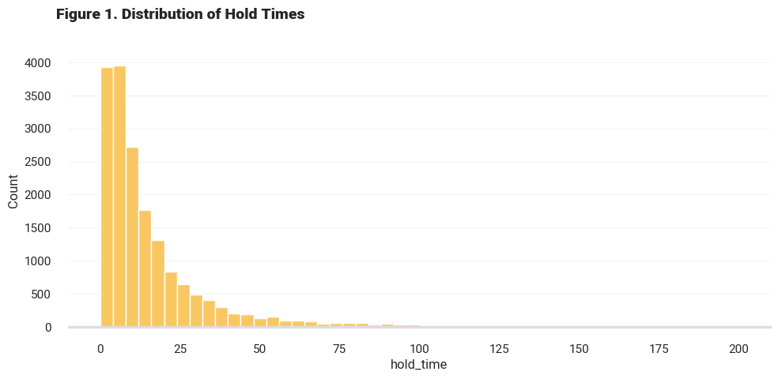
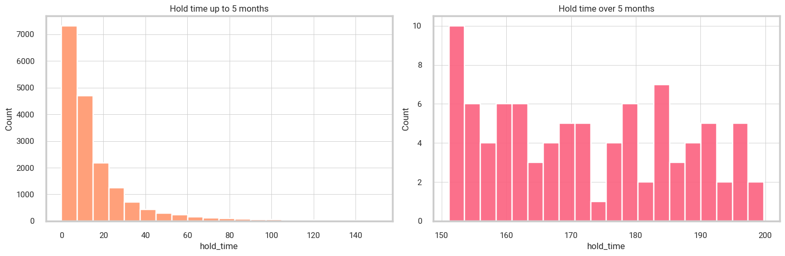
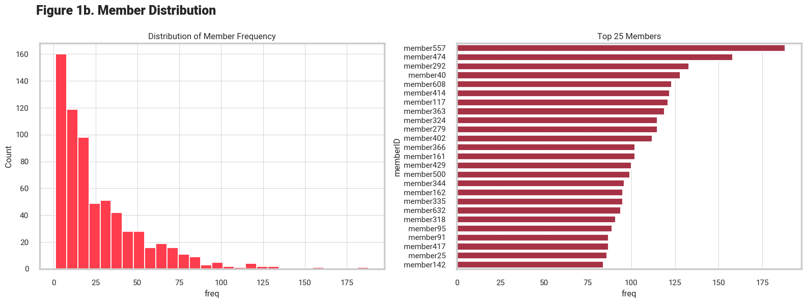
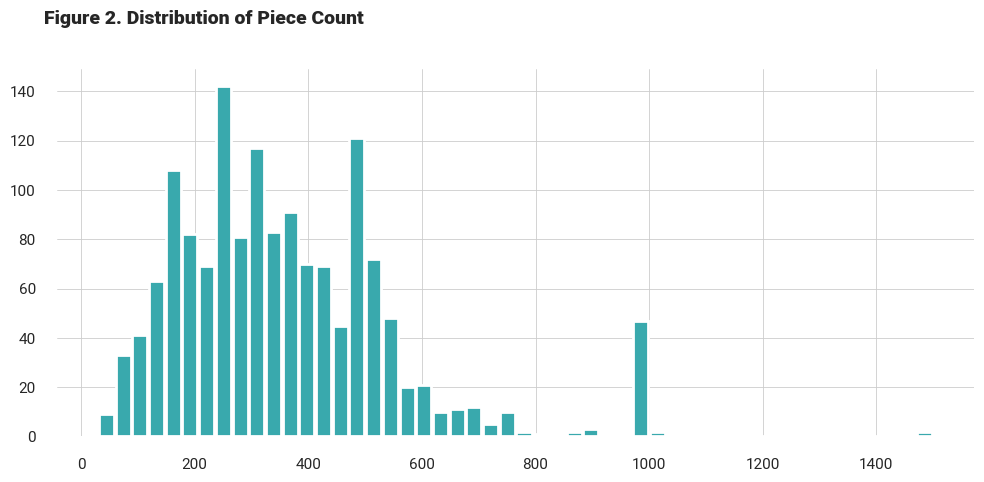
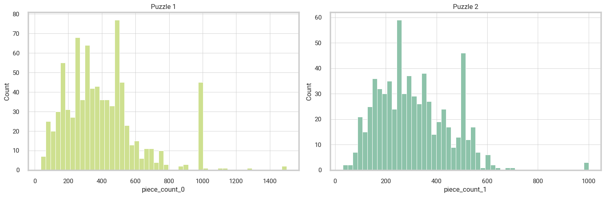
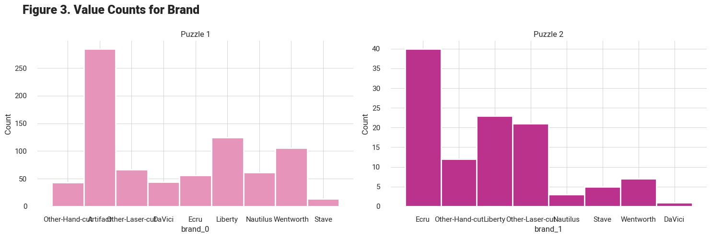
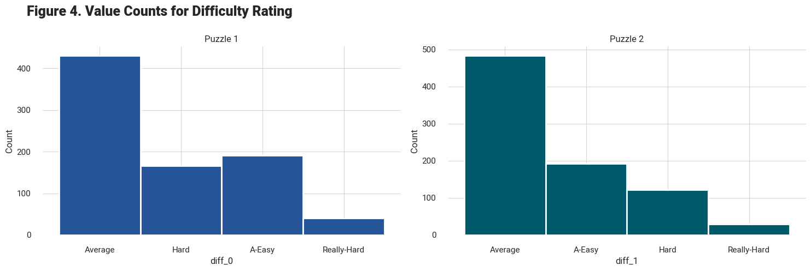

Notebook 2. EDA
Contents
import pandas as pd
import numpy as np
import matplotlib.pyplot as plt
import seaborn as sns
from IPython.display import set_matplotlib_formats
sns.set(style="whitegrid")
sns.set_context("poster", font_scale = .5, rc={"grid.linewidth": 0.6})
sns.set_style({'font.family': 'Roboto'})
# jupyter-book clean ./ --all
# jupyter-book build ./
# ghp-import -n -p -f _build/html
Notebook 2. EDA#
Member Hold Times EDA#
1. member_hold_times_and_packs.tsv
member- Unique identifiers for each personhold_time- number of days the person had the packpack_name- name of the pack (may have more than 1 puzzle per pack)
member_df = pd.read_csv("data/member_cleaned.csv", header = 0)
member_df.head()
| member | hold_time | pack_name | |
|---|---|---|---|
| 0 | member1 | 2.939411 | Artifact Puzzles Justin Hillgrove Word Travels... |
| 1 | member1 | 0.998885 | DaVici Puzzles Full Moon Feast DaVici Puzzles ... |
| 2 | member1 | 10.865032 | DaVici Puzzles Flying Frigate DaVici Puzzles H... |
| 3 | member1 | 22.083971 | Liberty Puzzles Haeckel Hummingbirds Nautilus ... |
| 4 | member1 | 5.077603 | DaVici Puzzles Diana Zimens City Of Cats |
# Distribution of the hold times
plt.figure(figsize = (10,5))
plt.title("Figure 1. Distribution of Hold Times", weight='heavy',y =1.1, x=0.16).set_fontsize('14')
z = sns.histplot(data=member_df, x="hold_time", color="#F9C762", alpha = 1.0, bins = 50)
sns.despine(left=True, bottom=False)
z.spines['bottom'].set_color('#DDDDDD')
z.yaxis.grid(True, color='#EEEEEE')
z.xaxis.grid(False)
plt.tight_layout()
# plt.savefig("_static/images/hold_times_dist.png", format="png", dpi=1200)
plt.show()

fig, axs = plt.subplots(1, 2, figsize=(15, 5))
sns.histplot(data=member_df, x=member_df.loc[member_df['hold_time'] < 150]['hold_time'], bins = 20,color="#ffa07a", alpha = 1.0, ax=axs[0])
axs[0].set_title("Hold time up to 5 months")
sns.histplot(data=member_df, x=member_df.loc[member_df['hold_time'] > 151]['hold_time'], bins = 20, color="#FB607F", alpha = 0.9, ax=axs[1])
axs[1].set_title("Hold time over 5 months")
fig.tight_layout()
#plt.savefig("_static/images/hold_times_dist2.png", format="png", dpi=1200)
plt.show()

# Creating a dataframe from the value counts
df2 = member_df['member'].value_counts().rename_axis('memberID').reset_index(name='freq')
df2.head()
| memberID | freq | |
|---|---|---|
| 0 | member557 | 188 |
| 1 | member474 | 158 |
| 2 | member292 | 133 |
| 3 | member40 | 128 |
| 4 | member608 | 123 |
fig, axs = plt.subplots(1, 2, figsize=(16, 6))
fig.suptitle("Figure 1b. Member Distribution", weight='heavy',y =0.99, x=0.16).set_fontsize('18')
sns.histplot(data=df2, x="freq", color="#FF3D4D", alpha = 1.0, ax=axs[0])
axs[0].set_title("Distribution of Member Frequency")
sns.barplot(y="memberID",x="freq", data= df2.head(25), alpha = 1.0,color="#B91F3A", ax=axs[1])
axs[1].set_title("Top 25 Members")
fig.tight_layout()
#plt.savefig("_static/images/member_freq_dist.png", format="png", dpi=1200)
plt.show()

Puzzle Packs EDA#
2. packs.tsv
pack_name - name of the pack (may have more than 1 puzzle per pack)
brand - brand name of puzzle pack
piece_count - number of pieces in puzzle
difficulty_rating - difficulty rating for puzzle
# Import and preview packs data
packs_df = pd.read_csv("data/packs_cleaned_dropna.csv",header = 0)
packs_df.head()
| pack_name | brand_0 | brand_1 | piece_count_0 | piece_count_1 | diff_0 | diff_1 | num_puzzles | |
|---|---|---|---|---|---|---|---|---|
| 0 | Anne Belle Thompson The Mikado Anne Belle Thom... | Other-Hand-cut | NaN | 387.0 | 242.0 | Average | Average | 2 |
| 1 | Anthology Puzzles Alphonse Mucha La Plume Anth... | NaN | NaN | 320.0 | 160.0 | Average | Average | 2 |
| 2 | Anthology Puzzles Colorful Cat Anthology Puzzl... | NaN | NaN | 150.0 | 170.0 | Average | Average | 2 |
| 3 | Anthology Puzzles Framed American Gothic Antho... | NaN | NaN | 320.0 | 300.0 | Average | Average | 2 |
| 4 | Anthology Puzzles Over The Moon Anthology Puzz... | NaN | NaN | 278.0 | 177.0 | Hard | A-Easy | 2 |
# Plot distribution for piece count
piece_count_all = pd.concat([packs_df[packs_df['piece_count_0'].notnull()]['piece_count_0'],
packs_df[packs_df['piece_count_1'].notnull()]['piece_count_1']])
plt.figure(figsize = (10,5))
plt.title("Figure 2. Distribution of Piece Count", weight='heavy',y =1.1, x=0.16).set_fontsize('14')
plt.hist(piece_count_all, color='#39a9ad', rwidth=0.9, bins = 50, alpha=1)
sns.despine(left=True, bottom=True)
plt.tight_layout()
# plt.savefig("static/piece_count_dist.png", format="png", dpi=1200)
plt.show()
fig, axs = plt.subplots(1, 2, figsize=(15, 5))
sns.histplot(data=packs_df, x=packs_df[packs_df['piece_count_0'].notnull()]['piece_count_0'], bins = 50,color="#cee090", alpha = 1.0, ax=axs[0])
axs[0].set_title("Puzzle 1")
sns.histplot(data=packs_df, x=packs_df[packs_df['piece_count_1'].notnull()]['piece_count_1'], bins = 50, color="#8dc3aa", alpha = 1.0, ax=axs[1])
axs[1].set_title("Puzzle 2")
fig.tight_layout()
# plt.savefig("_static/images/piece_count_dist2.png", format="png", dpi=1200)
plt.show()


# Bar charts for distribution of brand
fig, axs = plt.subplots(1, 2, figsize=(15, 5))
fig.suptitle("Figure 3. Value Counts for Brand", weight='heavy',y =0.99, x=0.16).set_fontsize('18')
sns.histplot(data=packs_df, x=packs_df[packs_df['brand_0'].notnull()]['brand_0'], color="#e794bb", alpha = 1.0, ax=axs[0])
axs[0].set_title("Puzzle 1")
sns.histplot(data=packs_df, x=packs_df[packs_df['brand_1'].notnull()]['brand_1'], color="#ba328b", alpha = 1.0, ax=axs[1])
axs[1].set_title("Puzzle 2")
sns.despine(left=True, bottom=True)
fig.tight_layout()
# plt.savefig("_static/images/brand_dist.png", format="png", dpi=1200)
plt.show()

# Bar charts for distribution of difficulty rating
fig, axs = plt.subplots(1, 2, figsize=(15, 5))
fig.suptitle("Figure 4. Value Counts for Difficulty Rating", weight='heavy',y =0.99, x=0.2).set_fontsize('18')
sns.histplot(data=packs_df, x=packs_df[packs_df['diff_0'].notnull()]['diff_0'], color="#255498", alpha = 1.0, ax=axs[0])
axs[0].set_title("Puzzle 1")
sns.histplot(data=packs_df, x=packs_df[packs_df['diff_1'].notnull()]['diff_1'], color="#015a6c", alpha = 1.0, ax=axs[1])
axs[1].set_title("Puzzle 2")
sns.despine(left=True, bottom=True)
fig.tight_layout()
# plt.savefig("_static/images/difficulty_dist.png", format="png", dpi=1200)
plt.show()
